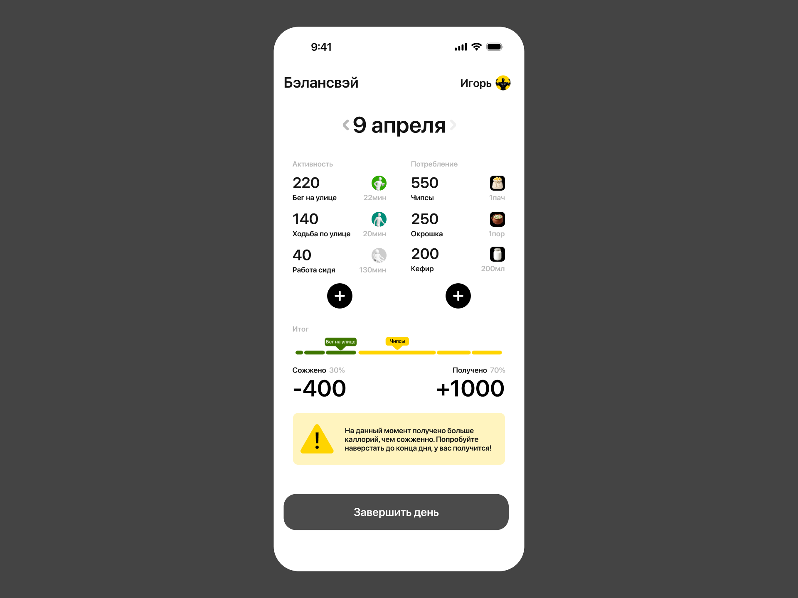
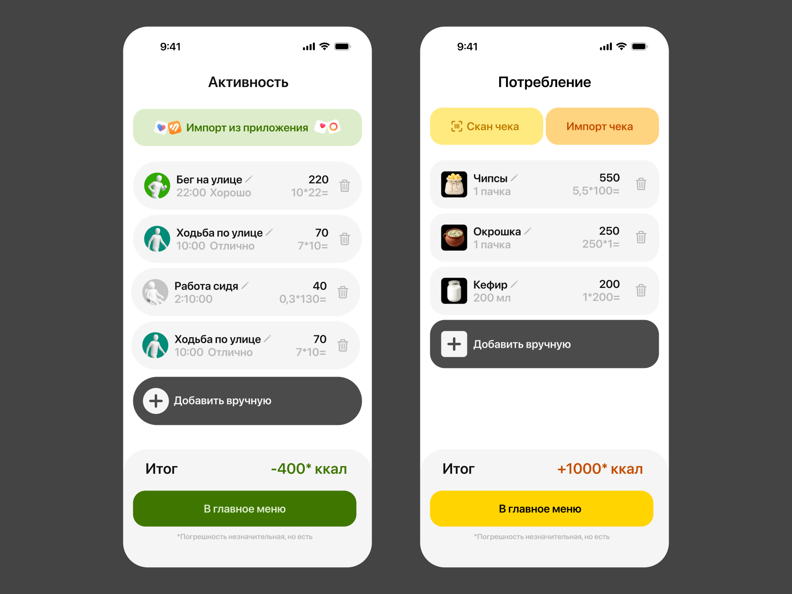
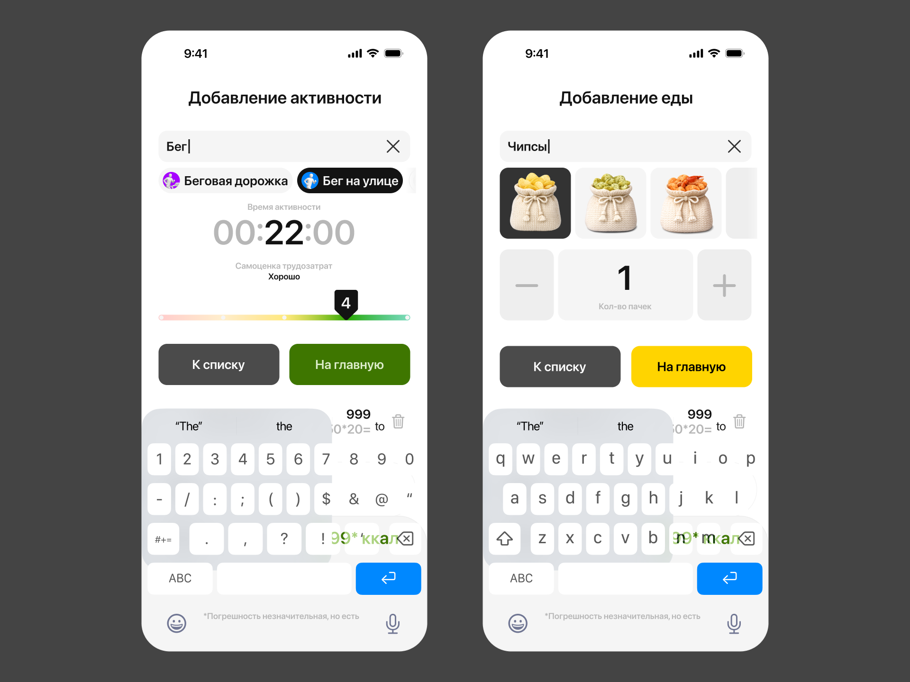
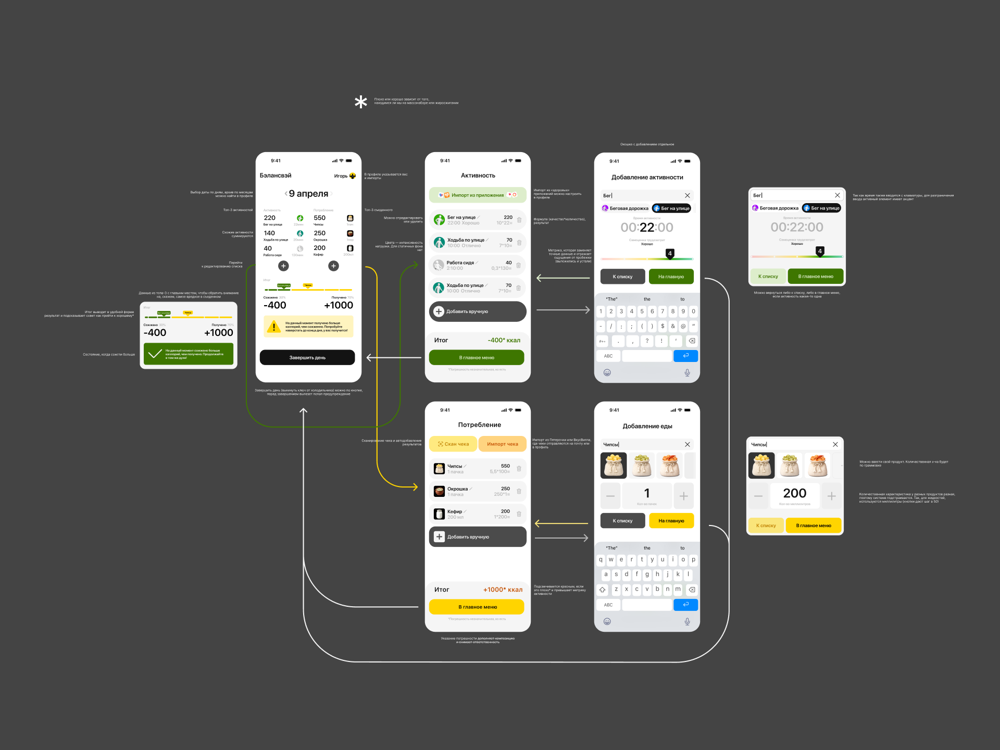

Балансвэй —
приложение для расчета калорий
Работа выполнена для первого раунда Дазайн-арены
Задание
Разработать дизайн приложения, в котором в удобном формате вычисяются сожженные и полученные калории

На главном экране мы можем переходить в списки добавления, перемещаться между днями, регулировать значения нынешнего вес в профиле или завершить день, не дожидаясь автоматического завершения

Экраны добавления активностей и потреблений похожи: мы можем сделать это автоматически или импортировать из приложений Здоровья и Пятерочки соответственно. Также можем просканировать чек. Можем удалять или редактировать позиции. Если потребление привышает активность, значение итога станет красным

Если добавляем вручную, то приложение подгружает еду или активность из своей базы данных с уже заданными значениями. В активности мы можем ставить время и ставить индекс самоощущения. В еде регулировать количество в актуальных единицах (для чипсов — пачки, для кефира — мл). Можем вернуться к списку и добавлять дальше или вернуться на главную. Кнопка на главную обладает бОльшим акцентом, чтобы выработать у пользователя привычку добавлять сразу, а не потом

Ссылка на фигмуСделано за неделю в апреле 2026